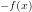
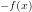
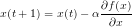
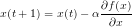
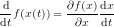
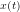
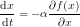
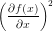
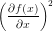

「最急降下法」とは関数の最小値(または最大値)を求める手法です。 単純で計算量が少ないのでよく使われる方法です。
最適化したい関数を目的関数と呼びます。
これを としましょう。
これを最小化を考えます。最大化したい場合はの最小化をすればいいだけです。
としましょう。
これを最小化を考えます。最大化したい場合はの最小化をすればいいだけです。
今、 が適当な値
が適当な値 としましょう。
最急降下法ではを次のように更新します。

ここで、αは小さな正の定数です。これを繰り返すことで最小値に近づいていきます。
としましょう。
最急降下法ではを次のように更新します。

ここで、αは小さな正の定数です。これを繰り返すことで最小値に近づいていきます。
αがあまり大きすぎると最小値を行き過ぎ、小さすぎるとなかなか収束しません。 また、極小値があるとそこに収束してしまう場合があるのが問題です。
授業でこんな感じで習ったような、という覚え書き。 僕の解釈も含まれているので、間違っているかも。
変数xがtの関数であり、とします。
このとき、目的関数fをtについて微分してみましょう。

となります。ここでαを正の定数とし、が

を満たすものとすると、
 αも正、も正なので、微分係数は常に負となります。
従って関数fはtに関して減少関数となります。
αも正、も正なので、微分係数は常に負となります。
従って関数fはtに関して減少関数となります。
最急降下法はこのような関数を数値解析的に求め、tを無限大とすることに対応しているわけです。
最急降下法は最適化するべき変数が複数ある場合にも適用できます。
目的関数fが、n個の変数![$\bm{x}=[x_1,x_2,\dots,x_n]^\mathrm{T}$](../../../../memo/algorithm/steepest-descent/b98697d30f7b8b603e8dc0c5e82fba9e.gif) の関数だとします。
このとき、
の関数だとします。
このとき、
![$\bm{x}(t+1)=\bm{x}(t)-\alpha\nabla f(\bm{x})=\bm{x}(t)-\alpha\left[\begin{array}{c}\displaystyle\frac{\partial f(x_1)}{\partial x_1}\\\vdots\\\displaystyle\frac{\partial f(x_n)}{\partial x_n}\end{array}\right]$](../../../../memo/algorithm/steepest-descent/ec517249d6bd912e61aca0324a9ffea7.gif) によって最適化できます。
によって最適化できます。
一変数の場合について、実際にやってみました。 例によって、SVGにJavascriptを埋め込んだ簡単なアニメーションです。 黒い曲線が目的関数。赤い点たちが最急降下法によって求めた最適値です。 初めは等間隔に並んでいた点が関数の最小値に近づいていきますが、極小値に収束するものがあることを確認できます。 SVGファイルをダウンロードする
更新量を大きくしてみましょう。最小値を行き過ぎてしまって、なかなか収束しないことが確認できます。
{kind=link}